One logline in.
A finished short out.
Filmwriter is an autonomous AI showrunner. Hand it a single line — or a whole chapter — and a team of Qwen agents plans the story, builds a continuity bible, directs the shots, checks its own frames against the script and the cast, edits the cut, and scores the result. No human in the loop.
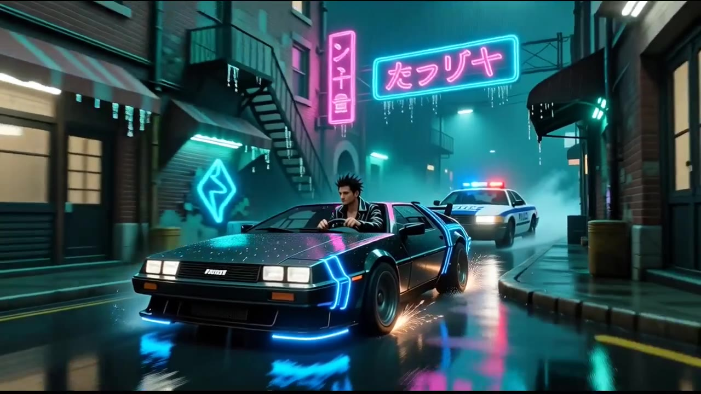
chase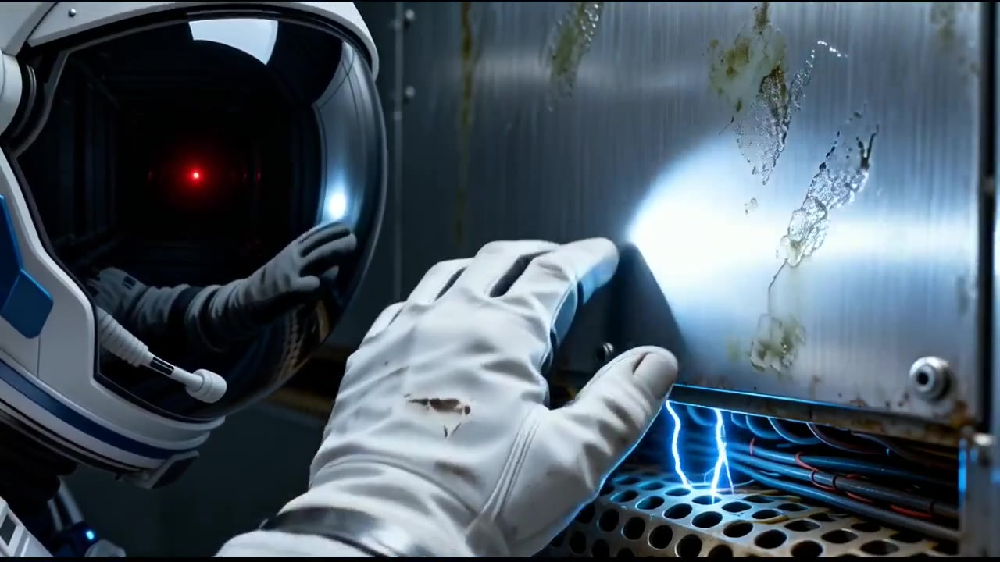
sci-fi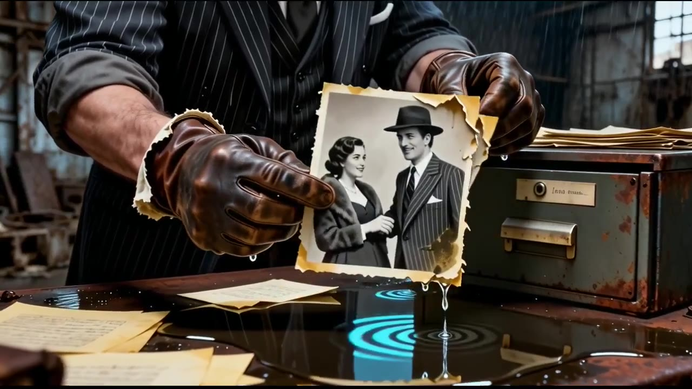
noir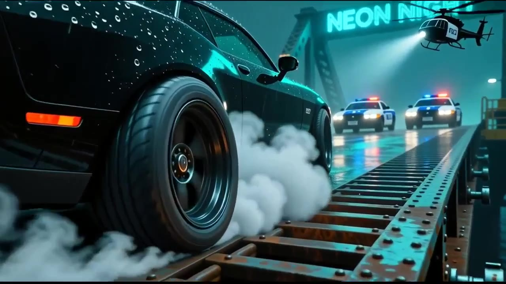
chase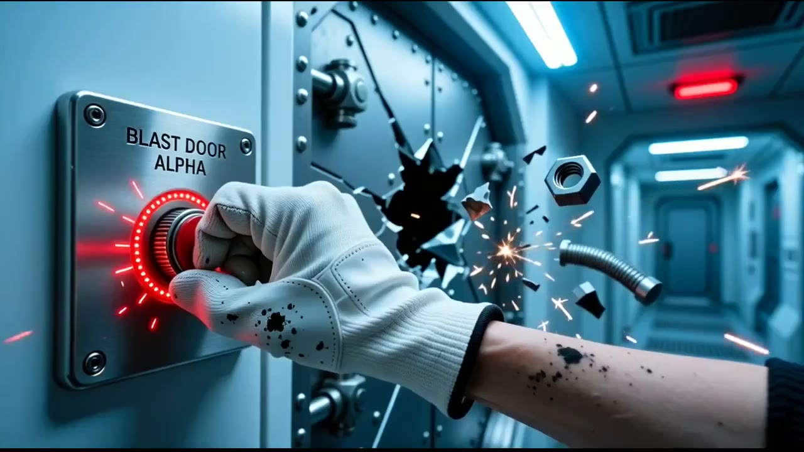
sci-fiThe pipeline
From a sentence to a cut, autonomously.
Every stage is an agent with a job. They hand the film down the line the way a real unit does — and each one can send a shot back.
Why it's a showrunner, not a generator
It defends the story while it makes it.
Most pipelines generate frames and hope. Filmwriter holds a typed memory of the film and checks every frame against it — catching drift, contradiction, and dropped setups before they reach the cut.
Continuity bible
Before a frame is drawn, it extracts a typed, locked set of facts — who's alive, what's true, the world's rules — then guards every beat against contradicting them, rewriting the ones that do.
Phase 1Identity verification
A vision agent compares each rendered character to their reference sheet. When a face, hairstyle, or wardrobe drifts, that frame is re-shot against the reference until it matches.
Phase 2Through-line, enforced
It names the film's central question and turns each scene into concrete must-show requirements — so the comet is actually a comet, and the payoff has its setup.
Phase 3It scores itself
Every finished film gets a KPI — continuity, character consistency, beat fidelity, through-line, and craft — computed from the QA signals the agents actually produced, not a vibe.
Phase 4Keyframe-anchored takes
Long takes are interpolated between two real compositions — a start frame and an end frame — so the camera travels with intent instead of drifting from a single image.
Phase 4Legal & clearances
A clearances agent audits every still for trademarked characters, logos, and garbled on-screen text — flagging and re-rolling anything that wouldn't clear, automatically.
Always onThe unit
An eight-agent film crew.
Each role is a distinct agent. Watch them light up and hand off the work in real time while a film is being made.


Frames it has directed
Every one of these is generated — and inspected.
Real stills pulled from finished films. Each one passed a physical-coherence inspector (correct anatomy, nothing sliced off the frame), a story-need check, identity verification against the cast, and a legal clearance before it was allowed into the cut.
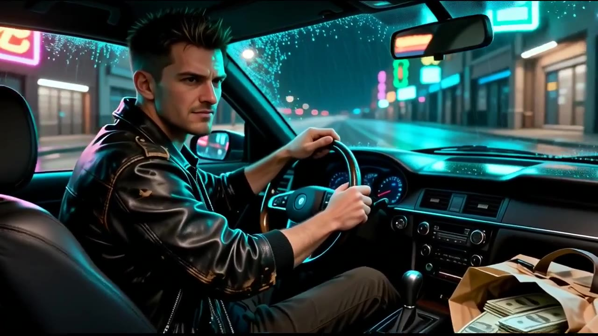
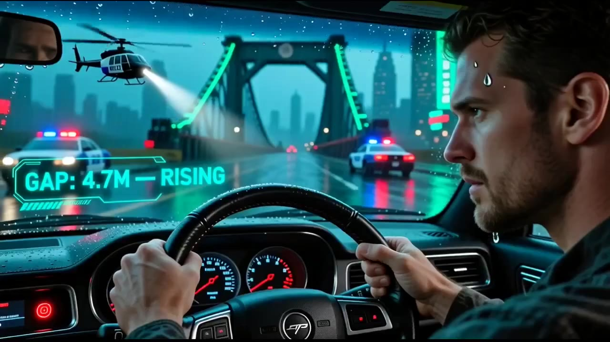
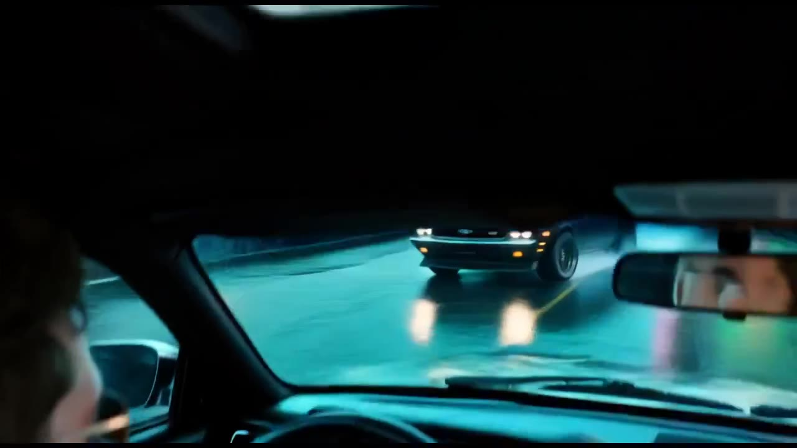
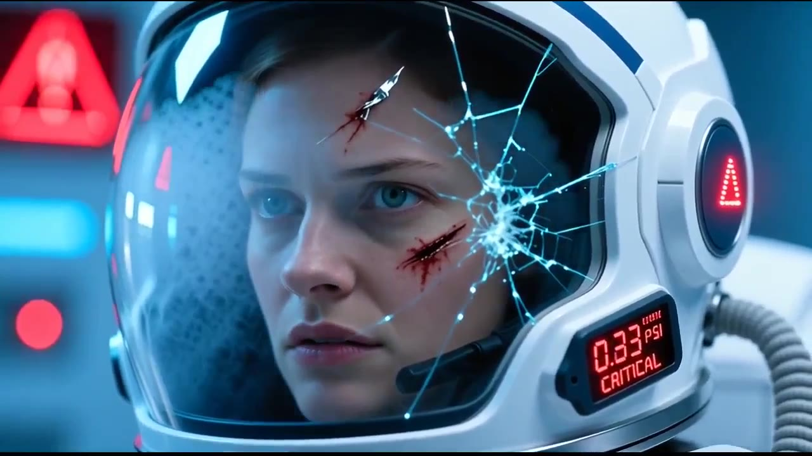
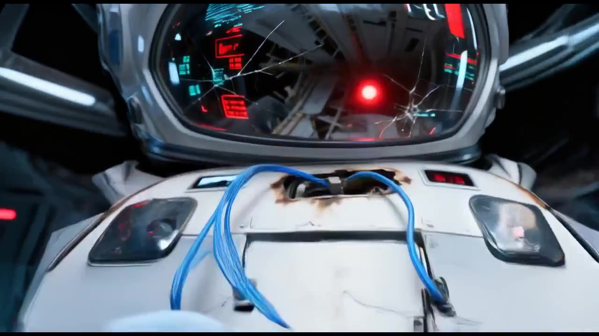
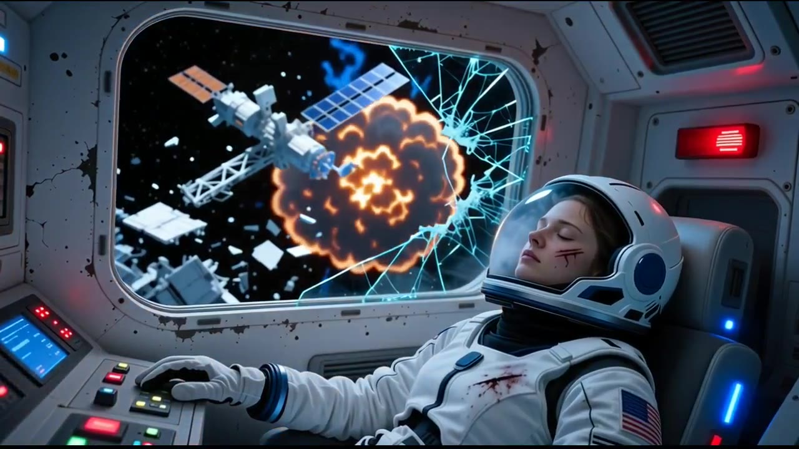
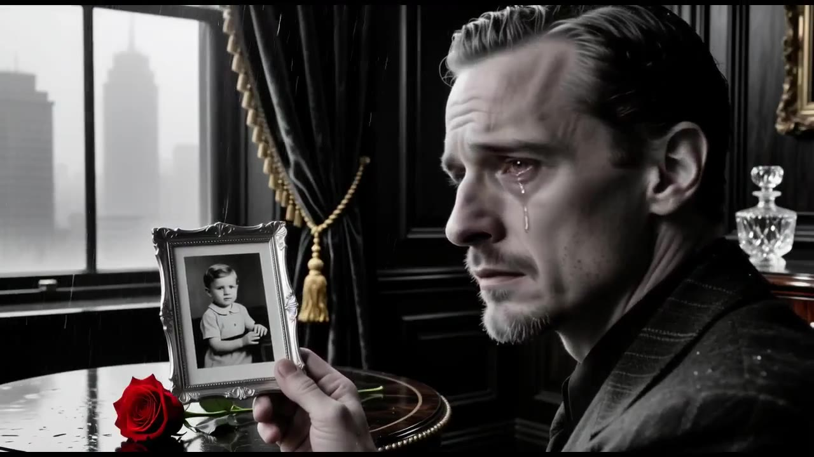
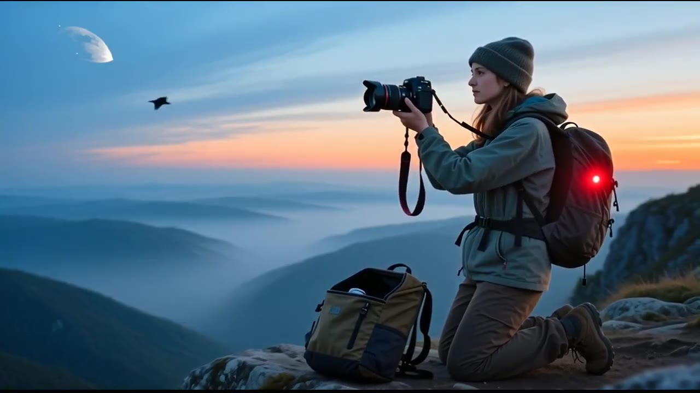
In motion
Whole films, start to finish.
Each one generated end-to-end from a single logline — directed, shot, scored, and cut with no human in the loop. The badge is the film's own KPI: it grades itself on continuity, identity, beats, through-line, and craft. These play live, straight from the app.
Full episodes
Long-form, directed end to end.
Give it a sentence.
Type a logline, pick your scenes and aspect, and watch the unit make your film — live, frame by frame.